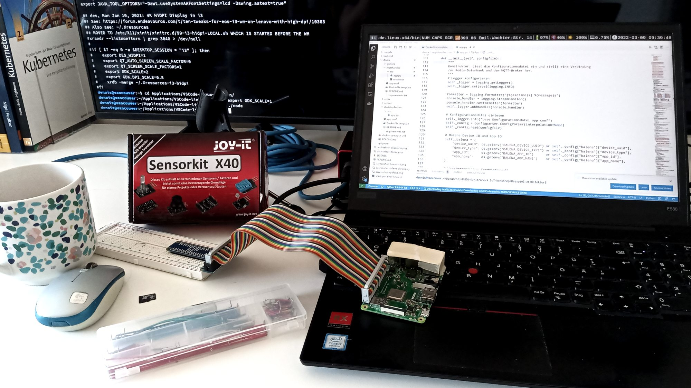

Dipl.-Wirtschaftsinformatiker (DH), 2005 – 2008
Senior Entwickler / Team Lead, SOA People AG
Webprogrammierung, Verteilte Systeme, IoT www.wpvs.de,
www.iot-embedded.de,
dhbw windows3.de
Seit 1992 begeistert von Computern und deren Programmierung
Seit 2009 nebenberuflicher Dozent an der DHBW Karlsruhe
Vorlesungen: Webprogrammierung, Verteilte Systeme, Internet of Things
Keyboarder, Bassist, Sänger und Songwriter in der Freizeit
Papa einer süßen kleinen Tochter ☺️
Vorlesungsinhalte
Auszug aus der Modulbeschreibung
Fachkompetenz
Die Studierenden kennen den technischen Aufbau typischer Devices/Embedded Systems
im Kontext des Internet of Things. Sie sind in der Lage, entsprechende Devices für einen gegebenen Einsatzzweck auszuwählen
und zu programmieren.
Methodenkompetenz
Die Studierenden sind in der Lage bei der Programmierung von IoT-Geräten systematisch und methodisch vorzugehen.
Personale und soziale Kompetenz
Die Studierenden verstehen die Herausforderungen des IoT für Unternehmen, Politik und Gesellschaft und sind
in der Lage, diese kompetent zu diskutieren.
Übergreifende Handlungskompetenz
Die Studierenden können reale betriebliche Problemstellungen im Kontext von IoT analysieren,
Konzepte entwerfen und
IoT-fähige Geräte programmierenund im Unternehmenskontext integrieren.
Tatsächlich bietet diese Beschreibung viel Handlungsspielraum, da sie ja für ganz
unterschiedliche Vorlesungen an allen DHBW-Standorten passen muss. Nebenstend findet
sich daher unsere Auslegung hier an der DHBW Karlsruhe.
Leider erlaubt die Studienordnung bei der Assignmentprüfung keine Gruppenarbeit. 🫤

Vorausgesetztes Wissen
Folgendes Wissen aus den bisherigen Semestern wird für diese
Vorlesung als bekannt vorausgesetzt. Wenn du etwas nicht mehr
genau weißt, wiederhole es möglichst bald!